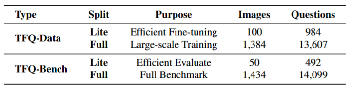
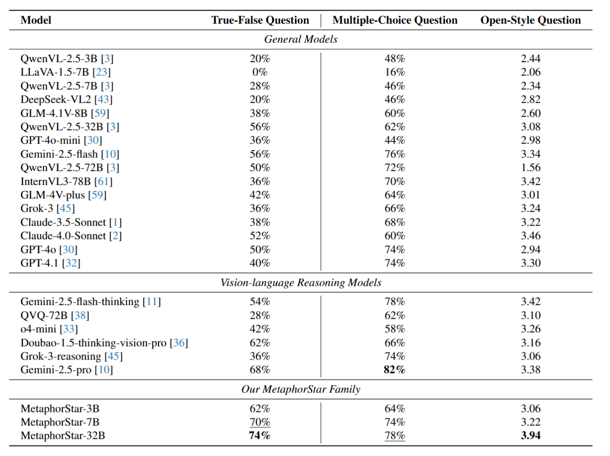
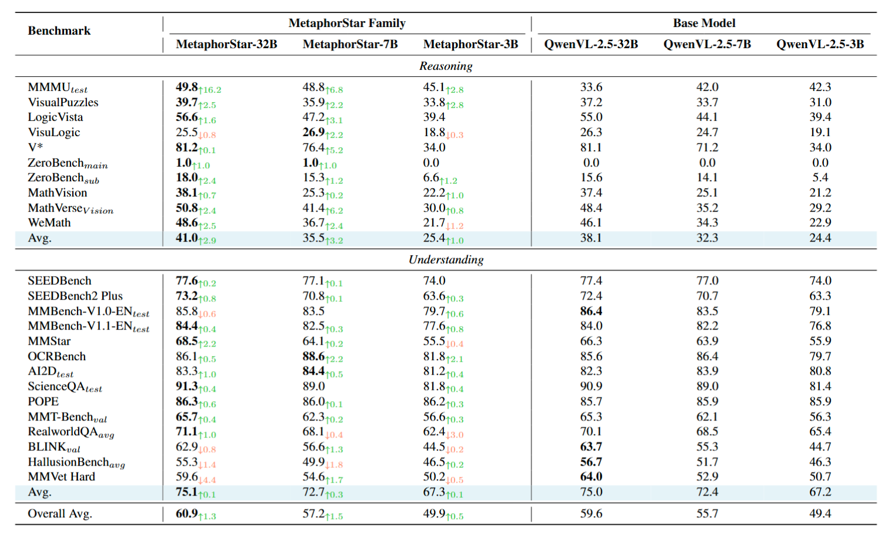
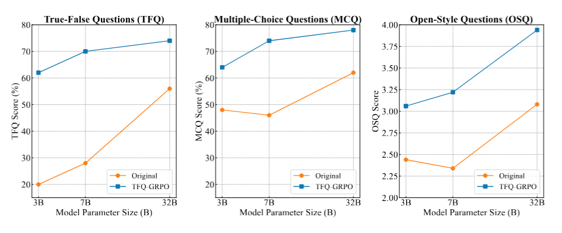
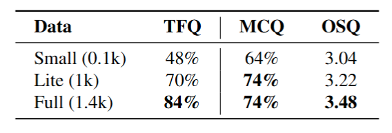
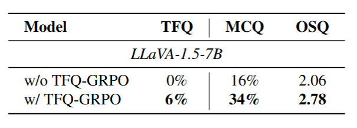
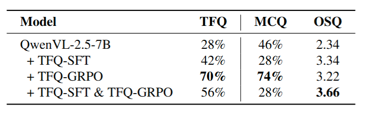

1Shanghai AI Laboratory
2Huazhong University of Science and Technology 3The Chinese University of Hong Kong
zhangchenhao@pjlab.org.cn niuyazhe@pjlab.org.cn
🔥 News
[Jan. 2026]: Our code, TFQ-Data, TFQ-Bench, and MetaphorStar-Family models have been released!
Metaphorical comprehension in images remains a critical challenge for AI systems. While Multimodal Large Language Models (MLLMs) excel at basic VQA, they struggle with nuanced cultural, emotional, and contextual implications.
To address this, we propose MetaphorStar, the first end-to-end visual reinforcement learning (RL) framework for image implication tasks. Our framework introduces the TFQ (True-False Question) paradigm to convert subjective interpretations into verifiable binary judgments, enabling stable RL optimization.
Our open-source MetaphorStar family (3B, 7B, 32B), trained using TFQ-GRPO, achieves significant performance improvements and state-of-the-art results.
Understanding visual metaphors requires complex cognitive chains:
Visual Elements → Symbolic Recognition → Metaphorical Mapping → Cultural Context → Deep Implication.
Standard Supervised Fine-Tuning (SFT) is insufficient for teaching this process.
We leverage Reinforcement Learning (RL) to optimize the reasoning process itself. However, applying RL to subjective visual interpretation is challenging due to the lack of "ground truth".
We solve this with the True-False Question (TFQ) Paradigm:
Binary Verifiability: Converting subjective interpretations into verifiable True/False judgments.
Deterministic Rewards: Clear reward signals ($r=1$ for correct, $r=0$ for incorrect).
Forced Reasoning: Requiring explicit Chain-of-Thought (CoT) reasoning within <think>...</think> tags.
Method: TFQ-GRPO
TFQ-GRPO (Group Relative Policy Optimization for True-False Questions) is our specialized visual RL algorithm.
1. Structured Output Format: We enforce a strict structure separating reasoning from judgment:
<think> [reasoning] </think> <answer> [True/False] </answer>
2. Multi-Component Reward Function:
$$R_{\text{total}} = R_{\text{accuracy}} + \lambda_{\text{format}} \cdot R_{\text{format}}$$
Correctness is rewarded based on the binary answer, while format rewards ensure structural compliance.
3. Group Relative Optimization: We sample $K$ diverse outputs for each question and optimize the policy based on the relative advantage of each output compared to the group average.
TFQ-Data & TFQ-Bench
We construct a large-scale dataset leveraging high-quality metaphorical images.

Figure 1: Overview of TFQ-Data and TFQ-Bench splits. TFQ-Data-Full contains ~14k questions for training, while TFQ-Bench provides rigorous evaluation sets strictly disjoint from training data.
MetaphorStar achieves state-of-the-art results on TFQ, Multiple-Choice (MCQ), and Open-Style (OSQ) questions.

Figure 2: Main performance comparison. MetaphorStar-32B outperforms GPT-4.1 and Claude-4.0-Sonnet on several metrics.
General Visual Reasoning
Learning image implication tasks improves general understanding capabilities. Our method shows gains on general benchmarks like MMBench, MathVista, and MMVet.

Figure 3: Performance on general vision benchmarks.
Ablation Studies
We analyze key factors contributing to MetaphorStar's success: Model Scaling, Data Scaling, Architecture, and Training Strategy.
1. Model & Data Scaling

Figure 4: Model Parameter Scaling.

Figure 5: Data Training Scaling.
2. Different Model Architecture
We validated our framework across LLaVA architectures. TFQ-GRPO proves to be model-agnostic, consistently improving the reasoning baseline of different backbones.

Figure 6: Ablation on Different Model Architectures.
3. Different Training Strategy
We compare three approaches: TFQ-SFT (SFT only), TFQ-SFT + TFQ-GRPO (SFT warmup + RL), and TFQ-GRPO (End-to-end RL).
Counterintuitively, SFT warmup actively harms performance. End-to-end RL (TFQ-GRPO) achieves best results on TFQ and MCQ. SFT-involving strategies cause catastrophic collapse on MCQ (46% → 28%), indicating severe generalization damage due to "SFT Curse" and entropy collapse.

Figure 7: Comparison of Different Training Strategies.
Discussion & Key Insights
The "SFT Curse" in Visual Metaphor Reasoning
Our analysis reveals a critical finding for reasoning-heavy visual tasks: SFT warmup is not only unnecessary but actively detrimental.
Entropy Collapse: Token entropy analysis shows that SFT causes severe entropy collapse (0.30) compared to the base model (1.33). This behavioral cloning traps the model in a narrow distribution, preventing it from exploring the broad solution space required for creative metaphor interpretation.
"Talker" vs. "Thinker": SFT teaches the model to mimic the output format ("Talker") but fails to instill discriminative logic ("Thinker").
Evaluation Bias: While SFT models may produce verbose outputs that bias LLM judges (inflating OSQ scores), they fail on objective discriminative benchmarks (TFQ/MCQ), indicating a illusion of competence.
Conclusion: End-to-end RL (TFQ-GRPO) leverages high initial entropy for global optimization, proving superior for open-ended reasoning tasks.
Conclusion
To conclude, we present MetaphorStar, a pioneering framework that introduces visual reinforcement learning to the domain of image metaphor understanding. By establishing the TFQ paradigm and the TFQ-GRPO algorithm, we successfully bridge the gap between subjective visual interpretation and objective RL optimization.
Our release includes the MetaphorStar model family, the large-scale TFQ-Data, and the rigorous TFQ-Bench.
Crucially, our findings demonstrate that learning to reason about metaphors serves as a high-level cognitive workout, enhancing general visual reasoning capabilities. We hope our open-source contribution will inspire further research into reasoning-based visual learning and the cognitive depths of MLLMs.
Citation
@article{zhang2026metaphorstar,
title={MetaphorStar: Image Metaphor Understanding and Reasoning with End-to-End Visual Reinforcement Learning},
author={Chenhao Zhang, Yazhe Niu and Hongsheng Li},
journal={arXiv preprint arXiv:xxx},
year={2026}
}